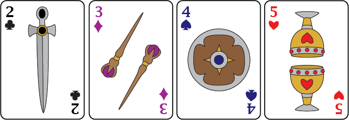
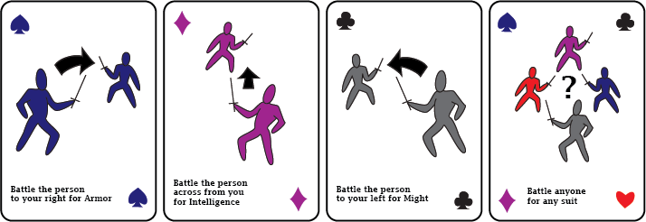
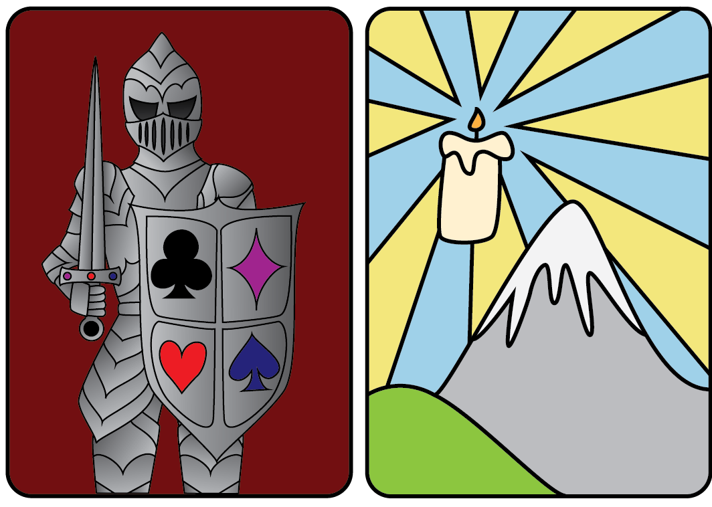
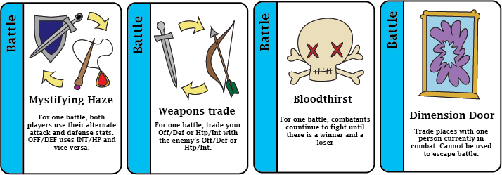
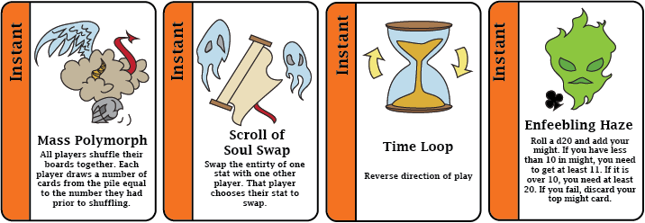
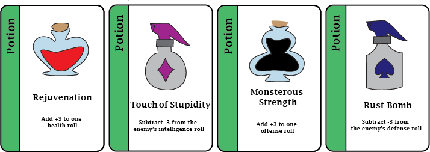

Game Design
Suit is a fantasy inspired RPG card game concept designed by me and a team of other UC Davis students. It is a fully playable game with a rule set, game boards, and two card decks. I was the main designer and concept artist for the visual look of the game and created both card decks as well as some packaging ideas and promotional content.
Each player draws cards from the stat and environment deck and battles other players until they collect enough of each stat to win the game.
The four stats from left to right: might, intelligence, armour, and health.
Battle cards dictate who and what to fight for.
The back design of the decks; left is the stat deck, right is the environment deck.
Environment cards are divided into battle, instant, and potion categories, which are played at various points in the game.
  A sampling of some of the different types of environment cards.
Below is some sample promotional and packaging material. On the left is the top of the box for the game, and on the right is a poster for the game.